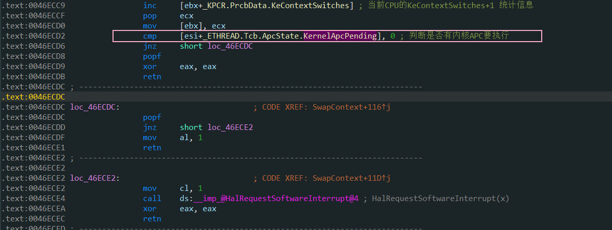
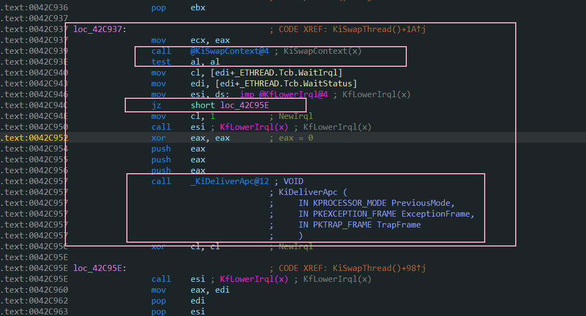
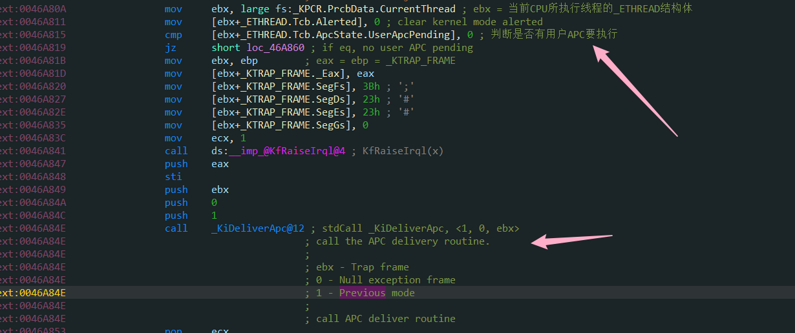
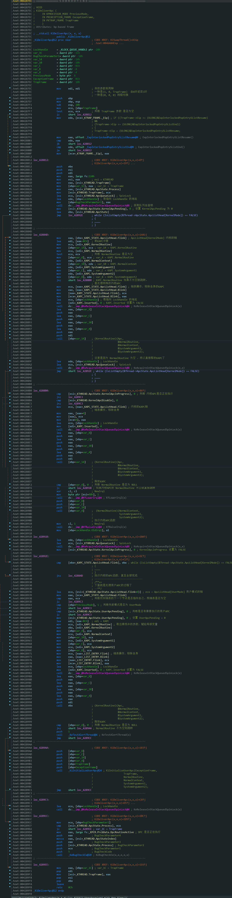
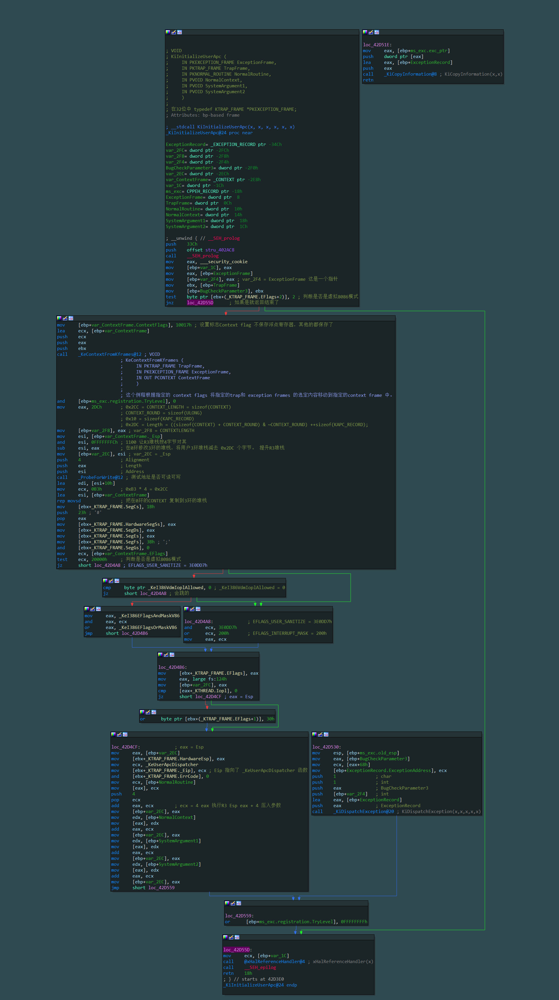
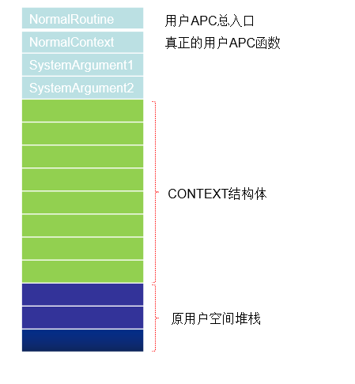

# 楔子
APC 函数的执行与插入并不是同一个线程，具体点说：
在 A 线程中向 B 线程插入一个 APC，插入的动作是在 A 线程中完成的，但什么时候执行则由 B 线程决定！，所以叫 “异步过程调用”。
内核 APC 函数与用户 APC 函数的执行时间和执行方式也有区别的。
# APC 的执行过程
首先研究一下内核 APC 函数在什么时候执行。
# 线程切换
SwapContext 判断是否有内核 APC -> KiSwapThread -> KiDeliverApc 执行内核 APC 函数。


# 系统调用、中断或异常
由 0 环返回 3 环的时候。这个执行点的条件是有用户 APC 需要执行，如果没有用户 APC 需要执行就直接返回了。
在单核 ntoskrnl.exe 中是 _KiServiceExit 函数 在多核 ntkrnlpa.exe 中是在函数 KiFastCallEntry 的下面。

# 分析 KiDeliverApc 函数
无论有用户 APC 还是内核 APC 需要执行都会调用这个函数。
在 IDA 中分析完毕后，发现关于执行内核 APC 有两种情况，既 NormalRoutine 为空和不为空，先执行特殊的。
在执行用户 APC 时也是一样，分为 NormalRoutine 为空和不为空，若是不为空就调用了 KiInitializeUserApc 函数。若是为空就执行 KeTestAlertThread 函数，这里调用这个函数又判断了用户 APC 列表是否是空表，如果不为空把 Thread->ApcState.UserApcPending = TRUE; 后就返回了。

对于其中的一些关键操作，分为处理内核 APC 和用户 APC 分别进行讨论。
# KiDeliverApc 中处理内核 APC 的流程
处理普通内核APC (点击展开)
判断第一个链表是否为空
判断 KTHREAD.ApcState.KernelApcInProgress 是否为 1
判断是否禁用内核 APC (KTHREAD.KernelApcDisable 是否为 1)
将当前 KAPC 结构体从链表中摘除
执行 KAPC.KernelRoutine 指定的函数 释放 KAPC 结构体占用的空间
将 KTHREAD.ApcState.KernelApcInProgress 设置为 1 标识正在执行内核 APC
执行真正的内核 APC 函数 (KAPC.NormalRoutine)
执行完毕 将 KernelApcInProgress 改为 0
循环
总结：
- 内核 APC 在线程切换的时候就会执行，这也就意味着，只要插入内核 APC 很快就会执行。
- 在执行用户 APC 之前会先执行内核 APC。
- 内核 APC 在内核空间执行，不需要换栈，一个循环全部执行完毕。
# KiDeliverApc 中处理用户 APC 的流程
执行用户 APC 时的堆栈操作
处理用户 APC 要比内核 APC 复杂的多，因为，用户 APC 函数要在用户空间执行的，这里涉及到大量换栈的操作：
当线程从用户层进入内核层时，要保留原来的运行环境，比如各种寄存器，栈的位置等等 (_Trap_Frame)，然后切换成内核的堆栈，如果正常返回，恢复堆栈环境即可。
但如果有用户 APC 要执行的话，就意味着线程要提前返回到用户空间去执行，而且返回的位置不是线程进入内核时的位置，而是返回到其他的位置，每处理一个用户 APC 都会涉及到： 内核-->用户空间-->再回到内核空间
堆栈的操作比较复杂，如果不了解堆栈的操作细节不可能理解用户 APC 是如何执行的！
处理用户APC流程 （点击展开）
判断用户 APC 链表是否为空
判断第一个参数是为 1
判断 ApcState.UserApcPending 是否为 1
将 ApcState.UserApcPending 设置为 0
链表操作 将当前 APC 从用户队列中拆除
调用函数 (KAPC.KernelRoutine) 释放 KAPC 结构体内存空间
调用 KiInitializeUserApc 函数
想要继续了解处理用户 APC 时是如何处理堆栈问题的就要接着分析 KiInitializeUserApc 函数了。
# 分析 KiInitializeUserApc 函数
线程进 0 环时，原来的运行环境 (寄存器栈顶等) 保存到 _Trap_Frame 结构体中，如果要提前返回 3 环去处理用户 APC，就必须要修改 _Trap_Frame 结构体：
比如：进 0 环时的位置存储在 EIP 中，现在要提前返回，而且返回的并不是原来的位置，那就意味着必须要修改 EIP 为新的返回位置。还有堆栈 ESP, 也要修改为处理 APC 需要的堆栈。那原来的值怎么办呢？处理完 APC 后该如何返回原来的位置呢？
KiInitializeUserApc 要做的第一件事就是备份：
将原来 _Trap_Frame 里的值备份到一个新的结构体中 (CONTEXT)，这个功能由其子函数 KeContextFromKframes 来完成。
在 IDA 中查看其汇编。

也可结合其源码分析，有整个流程的详细注释。
VOID | |
KiInitializeUserApc ( | |
IN PKEXCEPTION_FRAME ExceptionFrame, | |
IN PKTRAP_FRAME TrapFrame, | |
IN PKNORMAL_ROUTINE NormalRoutine, | |
IN PVOID NormalContext, | |
IN PVOID SystemArgument1, | |
IN PVOID SystemArgument2 | |
) | |
/*++ | |
Routine Description: | |
This function is called to initialize the context for a user mode APC. | |
Arguments: | |
ExceptionFrame - Supplies a pointer to an exception frame. | |
TrapFrame - Supplies a pointer to a trap frame. | |
NormalRoutine - Supplies a pointer to the user mode APC routine. | |
NormalContext - Supplies a pointer to the user context for the APC | |
routine. | |
SystemArgument1 - Supplies the first system supplied value. | |
SystemArgument2 - Supplies the second system supplied value. | |
Return Value: | |
None. | |
--*/ | |
{ | |
EXCEPTION_RECORD ExceptionRecord; | |
CONTEXT ContextFrame; | |
LONG Length; | |
ULONG UserStack; | |
// | |
// APCs are not defined for V86 mode; however, it is possible a | |
// thread is trying to set it's context to V86 mode - this isn't | |
// going to work, but we don't want to crash the system so we | |
// check for the possibility before hand. | |
// APCs 没有在虚拟 86 模式下定义；然而，线程可能试图将它的 context 设置为虚拟 86 模式 | |
// 这将不会工作，但我们不想崩溃系统，所以我们检查之前的可能性。 | |
if (TrapFrame->EFlags & EFLAGS_V86_MASK) { | |
return ; | |
} | |
// | |
// Move machine state from trap and exception frames to the context frame. | |
// | |
ContextFrame.ContextFlags = CONTEXT_FULL | CONTEXT_DEBUG_REGISTERS; | |
KeContextFromKframes(TrapFrame, ExceptionFrame, &ContextFrame); | |
// | |
// Transfer the context information to the user stack, initialize the | |
// APC routine parameters, and modify the trap frame so execution will | |
// continue in user mode at the user mode APC dispatch routine. | |
// 将上下文信息传递给用户栈，初始化 APC 例程参数，并修改 trap frame，以便在用户模式下继续执行 APC 调度例程。 | |
try { | |
ASSERT((TrapFrame->SegCs & MODE_MASK) != KernelMode); // Assert usermode frame | |
// | |
// Compute length of context record and new aligned user stack pointer. | |
// 计算 context record 的长度 并提升堆栈 且设置用户堆栈指针的对齐。 | |
Length = ((sizeof(CONTEXT) + CONTEXT_ROUND) & | |
~CONTEXT_ROUND) + sizeof(KAPC_RECORD); | |
UserStack = (ContextFrame.Esp & ~CONTEXT_ROUND) - Length; | |
// | |
// Probe user stack area for writability and then transfer the | |
// context record to the user stack. | |
// 探测用户堆栈区域的可写性，然后将上下文记录传输到用户堆栈。 | |
ProbeForWrite((PCHAR)UserStack, Length, CONTEXT_ALIGN); | |
RtlCopyMemory((PULONG)(UserStack + (sizeof(KAPC_RECORD))), | |
&ContextFrame, sizeof(CONTEXT)); | |
// | |
// Force correct R3 selectors into TrapFrame. | |
// 在 TrapFrame 中直接修正 R3 的段选择子 | |
TrapFrame->SegCs = SANITIZE_SEG(KGDT_R3_CODE, UserMode); | |
TrapFrame->HardwareSegSs = SANITIZE_SEG(KGDT_R3_DATA, UserMode); | |
TrapFrame->SegDs = SANITIZE_SEG(KGDT_R3_DATA, UserMode); | |
TrapFrame->SegEs = SANITIZE_SEG(KGDT_R3_DATA, UserMode); | |
TrapFrame->SegFs = SANITIZE_SEG(KGDT_R3_TEB, UserMode); | |
TrapFrame->SegGs = 0; | |
TrapFrame->EFlags = SANITIZE_FLAGS( ContextFrame.EFlags, UserMode ); | |
// | |
// If thread is supposed to have IOPL, then force it on in eflags | |
// 如果线程应该有 IOPL，那么直接把它赋给 eflags | |
if (KeGetCurrentThread()->Iopl) { | |
TrapFrame->EFlags |= (EFLAGS_IOPL_MASK & -1); // IOPL = 3 | |
} | |
// | |
// Set the address of the user APC routine, the APC parameters, the | |
// new frame pointer, and the new stack pointer in the current trap | |
// frame. Set the continuation address so control will be transferred | |
// to the user APC dispatcher. | |
// 设置当前 trap frame 中用户 APC 例程地址、APC 参数、新的帧指针和新的栈指针。 | |
// 设置延续地址，这样控制将被转移到用户 APC 调度程序。 | |
TrapFrame->HardwareEsp = UserStack; | |
TrapFrame->Eip = (ULONG)KeUserApcDispatcher; | |
TrapFrame->ErrCode = 0; | |
*((PULONG)UserStack)++ = (ULONG)NormalRoutine; | |
*((PULONG)UserStack)++ = (ULONG)NormalContext; | |
*((PULONG)UserStack)++ = (ULONG)SystemArgument1; | |
*((PULONG)UserStack)++ = (ULONG)SystemArgument2; | |
} except (KiCopyInformation(&ExceptionRecord, | |
(GetExceptionInformation())->ExceptionRecord)) { | |
// | |
// Set the address of the exception to the current program address | |
// and raise the exception by calling the exception dispatcher. | |
// 将异常的地址设置为当前程序的地址，并通过调用异常调度程序引发异常。 | |
ExceptionRecord.ExceptionAddress = (PVOID)(TrapFrame->Eip); | |
KiDispatchException(&ExceptionRecord, | |
ExceptionFrame, | |
TrapFrame, | |
UserMode, | |
TRUE); | |
} | |
return; | |
} |
# KiInitializeUserApc 函数流程
- 判断是否是虚拟 8086 模式，如果是函数直接返回。
- 设置 ContextFlags 并调用 KeContextFromKframes 将 trap 和 exception frames 移动到 context frame。
- 判断帧栈是否是用户模式
- 计算 context record 的长度 并提升堆栈 且设置用户堆栈指针的对齐。
- 探测用户堆栈区域的可写性，然后将上下文记录传输到用户堆栈。
- 在 TrapFrame 中直接修正 R3 的段选择子，如果线程应该有 IOPL，那么直接把它赋给 eflags
- 设置当前 trap frame 中用户 APC 例程地址、APC 参数、新的帧指针和新的栈指针。设置延续地址，这样控制将被转移到用户 APC 调度程序
- 如果在步骤 3 至 7 中出现异常，则会将异常的地址设置为当前程序的地址，并通过调用异常调度程序引发异常。
# 如何在 3 环执行用户 APC
可以观察到修改了 TrapFrame 中存储的 EIP 的值，将其改为了 KeUserApcDispatcher 这是一个函数，在 ntdll 中是 KiUserApcDispatcher 函数。
在 ntdll.dll 当中，我们用 IDA 打开看看：
.text:7C92E430 ; __stdcall KiUserApcDispatcher(x, x, x, x, x) | |
.text:7C92E430 public _KiUserApcDispatcher@20 | |
.text:7C92E430 _KiUserApcDispatcher@20 proc near ; DATA XREF: .text:off_7C923428↑o | |
.text:7C92E430 | |
.text:7C92E430 arg_C = byte ptr 10h | |
.text:7C92E430 | |
.text:7C92E430 lea edi, [esp+arg_C] ; (edi)->context frame | |
.text:7C92E434 pop eax ; (eax)->specified function | |
.text:7C92E435 call eax | |
.text:7C92E437 push 1 | |
.text:7C92E439 push edi | |
.text:7C92E43A call _ZwContinue@8 ; stdCall _ZwContinue, <edi, 1> | |
.text:7C92E43A ; | |
.text:7C92E43A ; 1 - set alert argument true | |
.text:7C92E43A ; ebp - addr of context frame | |
.text:7C92E43A ; execute system service to continue | |
.text:7C92E43F nop | |
.text:7C92E43F _KiUserApcDispatcher@20 |
这里需要对着堆栈图进行分析了。

当用户在 3 环调用 QueueUserAPC 函数来插入 APC 时，不需要提供 NormalRoutine ，这个参数是在 QueueUserAPC 内部指定的： BaseDispatchAPC
BaseDispatchAPC 的源码如下，主要调用了 APC 函数。
VOID | |
BaseDispatchAPC( | |
LPVOID lpApcArgument1, | |
LPVOID lpApcArgument2, | |
LPVOID lpApcArgument3 | |
) | |
{ | |
PAPCFUNC pfnAPC; | |
ULONG_PTR dwData; | |
PACTIVATION_CONTEXT ActivationContext; | |
NTSTATUS Status; | |
RTL_CALLER_ALLOCATED_ACTIVATION_CONTEXT_STACK_FRAME ActivationFrame = { sizeof(ActivationFrame), RTL_CALLER_ALLOCATED_ACTIVATION_CONTEXT_STACK_FRAME_FORMAT_WHISTLER }; | |
pfnAPC = (PAPCFUNC) lpApcArgument1; | |
dwData = (ULONG_PTR) lpApcArgument2; | |
ActivationContext = (PACTIVATION_CONTEXT) lpApcArgument3; | |
if (ActivationContext == INVALID_ACTIVATION_CONTEXT) { | |
(*pfnAPC)(dwData); | |
} else { | |
RtlActivateActivationContextUnsafeFast(&ActivationFrame, ActivationContext); | |
__try { | |
(*pfnAPC)(dwData); | |
} __finally { | |
RtlDeactivateActivationContextUnsafeFast(&ActivationFrame); | |
RtlReleaseActivationContext(ActivationContext); | |
} | |
} | |
} |
三环的 APC 执行完毕后就回来 执行 ntdll 中的 ZwContinue 了。
.text:7C92D040 ; __stdcall ZwContinue(x, x) | |
.text:7C92D040 public _ZwContinue@8 | |
.text:7C92D040 _ZwContinue@8 proc near ; CODE XREF: KiUserApcDispatcher(x,x,x,x,x)+A↓p | |
.text:7C92D040 ; KiUserExceptionDispatcher(x,x)+17↓p ... | |
.text:7C92D040 mov eax, 20h ; ' ' ; NtContinue | |
.text:7C92D045 mov edx, 7FFE0300h | |
.text:7C92D04A call dword ptr [edx] | |
.text:7C92D04C retn 8 | |
.text:7C92D04C _ZwContinue@8 endp |
通过快速调用进 0 环后调用了内核函数 NtContinue 。
NtContinue 又调用了 KiContinue 函数。
ZwContinue 函数的意义：
返回内核，如果还有用户 APC，重复上面的执行过程。
如果没有需要执行的用户 APC，会将 CONTEXT 赋值给 Trap_Frame 结构体。就像从来没有修改过一样。ZwContinue 后面的代码不会执行，线程从哪里进 0 环仍然会从哪里回去。
# Reference
滴水课件